La web de un negocio de Valladolid, para un cliente.
←→ para moverte ·P pantalla completa · rueda del ratón o clic en el índice
Unidad 3
Contenidos de la unidad
La unidad tiene quince sesiones, y nueve son de práctica. Cada alumno hace la web de un negocio de Valladolid para un cliente. Tu cliente es un adulto que conoces.
Saber qué necesita WordPress e instalarlo a mano en un servidor
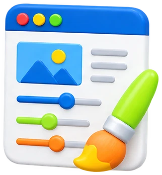
Criterios c y f
Personalizar el aspecto e instalar los plugins y menús que hacen falta
Criterio b
Crear usuarios con el rol que necesita cada persona del equipo
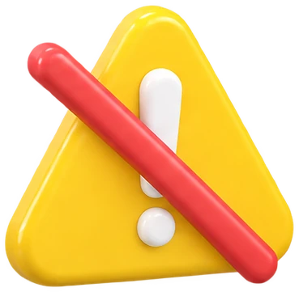
Criterios e y g
Mantener la web actualizada y segura
Criterio h
Abrir un foro con zonas públicas y privadas
Criterios d, i y j
Probar la web y hacer copias de seguridad que se puedan restaurar
Qué es un gestor de contenidos
Una web que el negocio pueda cambiar
PuceLatte es una cafetería de especialidad de Valladolid, inventada. Es el ejemplo de toda la unidad. Su equipo quiere publicar cada semana el café del mes y los cursos, y recibir mensajes. Nadie del equipo sabe HTML.
Con HTML y CSS: cada cambio es editar el archivo y volver a subirlo. Los cambios los tiene que hacer un técnico.
Con un gestor de contenidos: el equipo entra en un panel, escribe la noticia y pulsa Publicar.
PuceLatte, negocio inventado para la unidad. Captura propia, noviembre de 2026.
40 %
De todas las webs del mundo están hechas con WordPress
Un gestor de contenidos permite publicar sin escribir código. Por eso la mayoría de las webs usan un gestor, y WordPress se usa más que todos los demás juntos.
5,4 %
Shopify es el segundo. Wix tiene el 4,2 %
1 de 3
Webs sin gestor: hechas a mano o con otra herramienta
Fuente: W3Techs, Usage statistics of content management systems, octubre de 2026. Netcraft, julio de 2026.
Concepto clave
CMS
Content Management System, gestor de contenidos.
—El contenido va en una base de datos y el aspecto en un tema. Así cambias el diseño y los textos se quedan igual
—Cada persona entra con su usuario y sus permisos
—Se amplía con plugins
Programa instalado en un servidor web para crear, organizar y publicar contenido desde un panel en el navegador, sin escribir código.
Una página de WordPress es dinámica, porque PHP la crea en cada visita. Tu página de la UT1 es estática, porque el servidor envía el archivo tal cual.
Pruébalo · 5 min
WordPress en tu navegador
WordPress Playground abre un WordPress de prueba en tu navegador, sin instalar nada.
Los gestores se clasifican con dos preguntas: qué puedes hacer con el programa y cuánto cuesta. Cada gestor tiene una respuesta para cada pregunta.
Qué puedes hacer
Libre: puedes usarlo, estudiarlo, cambiarlo y compartirlo.
WordPress, Joomla, Drupal y Moodle (licencia GPL); PrestaShop (OSL)
Privativo: lo usas como dice la empresa, sin ver su código.
Wix, Squarespace, Shopify, SharePoint, Confluence
Cuánto cuesta
Gratis: pagas solo el servidor. Instalar y mantener la web te lleva tiempo.
WordPress, Joomla, Moodle
Freemium: lo básico es gratis y lo avanzado es de pago.
Wix, WordPress.com, Notion, muchos plugins (Elementor)
De pago: pagas una suscripción o una licencia.
Shopify, SharePoint
Qué es un gestor de contenidos
Tipos según el uso
Hay gestores para casi cualquier tipo de web. Los de propósito general hacen de todo con plugins.
Para qué
Ejemplos
Propósito general
WordPress, Joomla, Drupal
Blogs
Ghost, Blogger
Wikis
MediaWiki (la de Wikipedia), DokuWiki
Tiendas online
WooCommerce (dentro de WordPress), PrestaShop, Shopify, Adobe Commerce
Formación (LMS)
Moodle, Canvas, Blackboard
Foros
bbPress (dentro de WordPress), phpBB, Discourse
Qué es un gestor de contenidos
CMS y otros sistemas de gestión
Sigla
Qué gestiona
Ejemplo
En PuceLatte
CMS
El contenido de una web
WordPress
La web: carta, cursos, noticias
LMS
Cursos y alumnos
Moodle
Ahora no lo usa. Serviría para un curso online de barista
CRM
Clientes y su relación con el negocio
HubSpot, Salesforce
Los suscriptores y sus pedidos
ERP
Todo el negocio: compras, almacén, facturas
Odoo, SAP
El café verde, el stock y las facturas
KMS
El conocimiento interno
Notion, Confluence
Cómo se tuesta cada café
Qué es un gestor de contenidos
¿Cuál escoger?
Se elige por lo que necesita el cliente y por quién va a mantener la web.
✓Qué tiene que hacer la web
✓El coste total: servidor, plugins y tiempo
✓Quién la actualiza y cuánto sabe
✓Comunidad y seguridad
✓Poder llevarse el contenido a otro sitio
Si el cliente necesita…
Le recomiendas
Web de un negocio o tienda pequeña
WordPress
Solo vender online
Shopify o PrestaShop
Cursos con alumnos y notas
Moodle
Documentación interna del equipo
Notion o Confluence
Intranet de una empresa con Microsoft 365
SharePoint
Web sencilla sin mantener nada
Wix, Squarespace o WordPress.com
Comprueba lo aprendido
Una academia de idiomas quiere cursos online con alumnos, tareas y notas. ¿Qué le recomiendas?
Selecciona una opción.
El encargo
La web de un negocio de Valladolid
La práctica es una web real, hecha para un cliente. Tu cliente es un adulto que conoces. La web se entrega una vez, al final. Tú escribirás los textos con IA a partir de la entrevista, y después tu cliente los aprobará. Así trabajan hoy los desarrolladores web.
Su negocio
Tu cliente tiene o lleva un negocio. Puede ser un familiar, un amigo o el dueño de una tienda del barrio. Haces la web de ese negocio con el permiso de tu cliente. Los datos legales son inventados, y en el pie pones «Web de prácticas».
Un negocio inventado a partir de uno real
Tu cliente trabaja en un negocio o lo conoce bien. Por ejemplo, tu madre trabaja en una peluquería o un vecino trabaja en un taller. Tu cliente y tú inventáis un negocio parecido, y tu cliente hace de dueño.
¿No tienes a nadie? Habla con el profesor antes de la entrevista.
Las partes
0 · Entrevista a tu cliente, en casa
1 · Instalar WordPress
2 · Diseño de páginas y textos legales
· Revisión de tu cliente
3 · Usuarios, seguridad, foro y copias
· Pruebas cruzadas y entrega
Práctica · Parte 0
La entrevista con tu cliente
Entrevista a tu cliente y rellena el formulario de la tarea de Classroom. Con las respuestas de tu cliente escribirás con IA todos los textos de la web. Si no preguntas un dato, la IA se lo inventará.
Lo que tienes que preguntarle
✓El negocio: nombre, qué hace, dirección, desde cuándo
✓Para quién es la web y qué tiene que conseguir
✓Tres o cuatro servicios, con precio u horario
✓Qué le diferencia de otros negocios parecidos
✓Qué le preguntan siempre sus clientes
✓Cómo habla a sus clientes y una frase suya, con sus palabras
✓Qué noticias publicaría y para qué quiere un foro
✓Contacto y horario
✓Colores, logo y una web que le guste
✓Quién actualizará la web y qué fotos te da
Dónde
En casa
Entrega
Antes de la sesión 4
Ejemplo resuelto: PuceLatte
Cafetería de especialidad junto a la Plaza Mayor. Tuesta su café una vez a la semana. Objetivo: que sus clientes se apunten a los cursos y a la suscripción. La cafetería les habla de tú, con humor pucelano.
Si el negocio es real, necesitas el permiso de tu cliente para la web y para las fotos. En las fotos no puede salir ninguna persona que se pueda reconocer.
Cómo funciona WordPress
Parte pública y administración
WordPress tiene dos partes: la web que ve cualquier persona y el panel desde el que se gestiona. Ya las viste en Playground.
Parte pública (front-end): nombre.pucela.top
La web de PuceLatte. Captura propia, noviembre de 2026.
Panel de WordPress 7.1 en demo.pucela.top. Captura propia, noviembre de 2026.
Cómo funciona WordPress
Lo que necesita WordPress para funcionar
En cada visita, PHP lee la base de datos y genera la página. Por eso el servidor necesita tres programas y un certificado.
—Servidor web: Apache, Nginx o LiteSpeed. Nuestro servidor usa Caddy
—PHP 8.3 o superior
—Base de datos: MySQL 8.0 o MariaDB 10.11, o superiores
—HTTPS, para cifrar contraseñas y formularios
Dónde se comprueba: Herramientas › Salud del sitio › Información
Esquema de la UT1: los tres niveles de una aplicación web.
Cómo funciona WordPress
Formas de tener WordPress
Cómo
Qué haces
Cuándo
A mano en un servidor
Subes los archivos por SFTP y preparas wp-config.php
Lo que harás tú
Instalador de un hosting
Softaculous, en un hosting con cPanel: rellenas un formulario
Un negocio con hosting contratado
WordPress.com
Nada: te lo alojan y lo mantienen ellos
Webs sencillas, sin plugins propios
Playground o Studio
Lo abres en el navegador o en tu equipo
Practicar sin publicar
En un hosting con cPanel, la base de datos la creas tú. En nuestro servidor ya está creada: te la da el profesor.
Cómo funciona WordPress
Una web de WordPress son archivos y una base de datos
Los archivos, en la carpeta web
wp-admin/ — el panel
wp-includes/ — el código de WordPress
wp-content/ — tus temas, plugins e imágenes
themes/ plugins/ uploads/
wp-config.php — los datos de conexión
La base de datos, en tablas
wp_posts — entradas y páginas
wp_users — usuarios
wp_options — ajustes
wp_comments — comentarios
wp_terms — categorías y etiquetas
Al actualizar, WordPress cambia wp-admin y wp-includes. Tu contenido está en wp-content y en la base de datos. Por eso una copia de seguridad lleva las dos cosas.
Cómo funciona WordPress
wp-config.php: los datos de conexión
Le dice a WordPress a qué base de datos conectarse. WordPress trae un modelo que se llama wp-config-sample.php. Lo copias con el nombre wp-config.php y lo rellenas.
—DB_NAME, DB_USER, DB_PASSWORD: los de tu ficha
—DB_HOST: localhost, porque la base de datos está en el mismo servidor
—Ocho claves nuevas, que protegen las sesiones
—Este archivo tiene tu contraseña: no lo compartas ni lo pegues en una IA
wp-config.php
// ** Ajustes de MySQL ** //
define( 'DB_NAME', 'nombre' );
define( 'DB_USER', 'nombre' );
define( 'DB_PASSWORD', 'la-de-tu-ficha' );
define( 'DB_HOST', 'localhost' );
define( 'DB_CHARSET', 'utf8mb4' );
define( 'AUTH_KEY', 'pega aquí las ocho claves nuevas' );
// … siete claves más …
$table_prefix = 'wp_';
define( 'WP_DEBUG', false );
Cómo se instala
SFTP: copiar archivos al servidor
SFTP copia archivos entre tu equipo y un servidor por una conexión cifrada. FTP no se usa: envía la contraseña sin cifrar.
Tus datos (en tu ficha)
Servidor sftp.pucela.top · puerto 22
Usuario y contraseña de tu ficha
Carpeta pública: web(en cPanel, public_html)
Tu cuenta solo copia archivos: no tiene terminal.
FileZilla: en el aula ya está instalado. En casa, descarga FileZilla Client de filezilla-project.org.
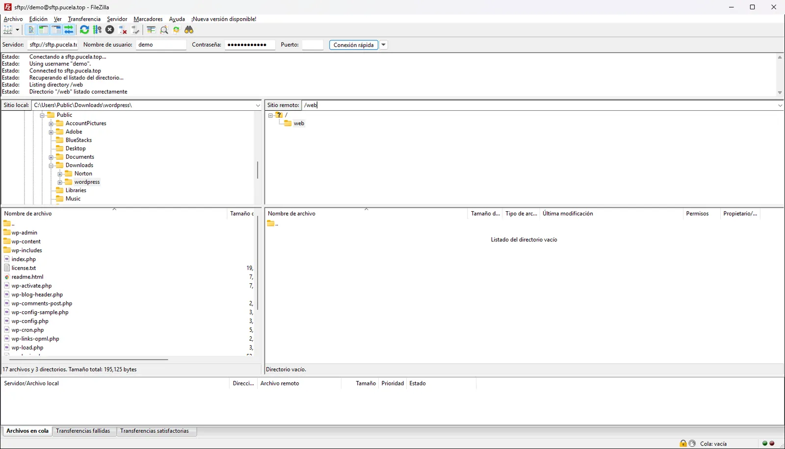
1 Conexión rápida · 2 tu equipo · 3 el servidor · 4 la cola de transferencias
Pruébalo · 10 min
Sube un archivo a tu carpeta
Antes de instalar WordPress, comprueba que llegas a tu carpeta del servidor.
Cómo se instala
Instalar WordPress a mano: seis pasos
1
Descarga WordPress en español y descomprímelo
2
Prepara los datos de tu base de datos
3
Copia wp-config-sample.php como wp-config.php y rellénalo
4
Sube por SFTP el contenido de wordpress a web
5
Abre https://nombre.pucela.top y escribe el título, el usuario, la contraseña y el correo
6
Entra en el panel: /wp-admin
Un instalador como Softaculous hace estos pasos por ti.
Ejercicio interactivo
Ordena los pasos
Los pasos salen desordenados. Ordénalos. El botón Comprobar marca los pasos que están en su sitio. El botón Pista coloca un paso. El botón Otro ejercicio cambia a otra lista de pasos.
Práctica · Parte 1
Instala WordPress a mano
Instala WordPress en tu subdominio sin instalador, con los datos de tu ficha.
Lo que tiene que tener
✓wp-config.php con tus datos y ocho claves nuevas
✓En la raíz: https://nombre.pucela.top/
✓Tu usuario distinto de «admin» y contraseña fuerte
✓El nombre del negocio de tu cliente como título
✓Los ajustes del primer día
✓Un usuario «profesor» con el rol Administrador
✓Las cinco pruebas superadas
Tiempo
2 sesiones
Revisión
Al final de la 2.ª sesión
✓ Puedes usar
FileZilla, VS Code, esta presentación y su chuleta
La IA para entender un mensaje de error, sin pegar contraseñas ni wp-config.php
✗ No puedes usar
Instaladores automáticos
Parte 1 · Pasos 1 y 2
Descarga WordPress y ten a mano tu base de datos
1.En es.wordpress.org, pulsa Consigue WordPress, arriba a la derecha, y después Descarga WordPress. Cierra con la × la ventana «¡Hola! Gracias por descargar WordPress». Descomprime el zip con Extraer todo. Sale una carpeta con el nombre del zip, y dentro está la carpeta wordpress. Usa la carpeta wordpress.
2.Busca tu ficha. Tiene los datos de tu base de datos. Guarda la ficha y no la compartas
La base de datos está vacía: WordPress crea sus tablas en el paso 5.
Tu ficha · base de datos
Nombre de la base
nombre (como tu subdominio)
Usuario
nombre
Contraseña
la de tu ficha
Servidor
localhost
En un hosting con cPanel, entra en Bases de datos › Asistente de bases de datos MySQL. Creas la base y el usuario, y al usuario le das «Todos los privilegios».
Parte 1 · Paso 3
Prepara wp-config.php
1.En la carpeta wordpress, copia wp-config-sample.php y llámalo wp-config.php
2.Abre wp-config.php con VS Code y cambia las tres líneas con _here por los datos de tu ficha
3.Abre api.wordpress.org/secret-key/1.1/salt/. La página te da ocho líneas nuevas. En wp-config.php, borra las ocho líneas de las claves y pega en su lugar las líneas nuevas
4.Guarda
El archivo tiene que llamarse wp-config.php, no wp-config.php.txt. Para ver la extensión, en el Explorador pulsa Ver › Mostrar › Extensiones de nombre de archivo.
wp-config.php · antes y después
// Así viene en wp-config-sample.php:
define( 'DB_NAME', 'database_name_here' );
define( 'DB_USER', 'username_here' );
define( 'DB_PASSWORD', 'password_here' );
// Así queda en tu wp-config.php:
define( 'DB_NAME', 'nombre' );
define( 'DB_USER', 'nombre' );
define( 'DB_PASSWORD', 'la-de-tu-ficha' );
define( 'DB_HOST', 'localhost' );
Parte 1 · Paso 4
Sube los archivos por SFTP
Se sube lo que hay dentro de la carpeta wordpress, no la carpeta.
Parte 1 · Pasos 5 y 6
El asistente y la primera entrada al panel
Abre la dirección de tu web con https.
Parte 1
Si algo falla
Lo que ves
Por qué pasa
Qué haces
«Error al establecer una conexión con la base de datos»
Algún dato de wp-config.php no coincide
Revisa nombre, usuario y contraseña con tu ficha
El asistente pide idioma y datos de la base
WordPress no encuentra wp-config.php
Comprueba que no se llama .txt y que está en la misma carpeta que wp-admin
La web solo abre en /wordpress/
Subiste la carpeta, no su contenido
Mueve el contenido a web con FileZilla
Página en blanco o error de PHP
Falta una comilla o un punto y coma en wp-config.php
Compáralo línea a línea con el modelo
Error 500 o web a medias
La subida se cortó
Vuelve a subir los archivos y sobrescribe los que tienen distinto tamaño
«No seguro» en el navegador
Instalaste con http://
En Ajustes › Generales, pon las dos direcciones con https://
Parte 1
Los ajustes del primer día
Antes de construir, deja el panel preparado.
Parte 1
Salud del sitio
Herramientas › Salud del sitio revisa tu WordPress y te dice qué arreglar.
—Estado: errores críticos y recomendaciones, cada uno con su explicación
—Información: versiones de WordPress, PHP y la base de datos
Pruébalo · 3 min
Abre la Salud del sitio de tu web y lee en voz alta a tu compañero la primera recomendación.
Si sale «Actualización de WordPress disponible», ve a Escritorio › Actualizaciones y pulsa Actualizar a la versión… Esta vez no hagas la copia que pide la página, porque tu web está vacía. Al terminar, vuelve a Actualizaciones y pulsa Actualizar las traducciones.
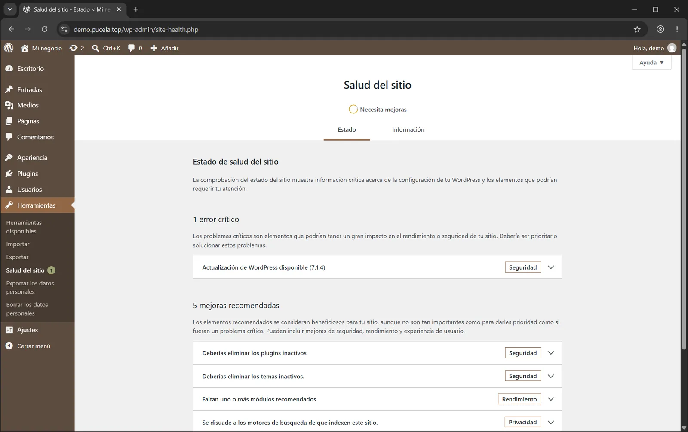
Salud del sitio en demo.pucela.top. Captura propia, noviembre de 2026.
Parte 1 · Pruebas
Antes de dar por buena la instalación
Haz estas cinco pruebas. Si una prueba falla, mira la diapositiva «Si algo falla».
✓La web abre con HTTPS y el navegador enseña el candado
✓/wp-admin abre el panel
✓Salud del sitio sin errores críticos. Si pide actualizar, actualiza
✓«¿Has olvidado tu contraseña?» manda un correo y el correo te llega
✓La web se abre en tu móvil con datos móviles, sin wifi
El panel de WordPress
El escritorio de WordPress
El menú de la izquierda lleva a todas las pantallas. Lo que aparece en él depende de tu rol y de los plugins.
Escritorio: avisos y Actualizaciones
Entradas, Medios, Páginas, Comentarios: el contenido
Apariencia: temas y menús
Plugins y Usuarios
Herramientas: Salud del sitio
Ajustes: Generales, Lectura, Comentarios…
Barra de arriba: el nombre de la web lleva a la parte pública. Ctrl + K busca cualquier pantalla.
El panel de WordPress
Entradas y páginas
WordPress guarda el contenido como entrada o como página. Cada tipo sale en un sitio distinto de la web.
Entrada
Contenido con fecha: una noticia, un evento
Lleva autor, categoría y etiquetas
Sale en Noticias, la más nueva arriba, y en el RSS
En PuceLatte: «El café del mes: Etiopía»
Página
Contenido que no depende de la fecha
Va en el menú o en el pie
Se diseña con Elementor
En PuceLatte: Inicio, Carta, Cursos, Aviso legal
Las entradas se clasifican con categorías y con etiquetas. Una categoría es un grupo grande, como Cursos, Café del mes o Novedades. Una etiqueta es una palabra suelta, como latte art o Etiopía. Las dos son taxonomías, que son formas de clasificar.
El panel de WordPress
Escribir una entrada
Cada párrafo, imagen o botón es un bloque. El botón + añade uno.
—A la derecha, en la pestaña Entrada, están la categoría, las etiquetas, la imagen destacada, que sale en la lista de noticias, y el extracto, que es el resumen
—Estados: borrador, pendiente de revisión, programada, publicada
—Imágenes que pesen poco y con texto alternativo
Pruébalo · 10 min
Ve a Entradas › Añadir entrada. Si sale la bienvenida al editor, ciérrala con la ×. Escribe la primera noticia de tu negocio. A la derecha, pulsa la pestaña Entrada y abre Categorías. Pulsa el enlace Añadir categoría, escribe el nombre y pulsa el botón Añadir categoría. Abre Etiquetas, escribe cada etiqueta y pulsa Intro. Guárdala como borrador. Es tu primera prueba.
Editor de bloques de WordPress 7.1. Captura propia, noviembre de 2026.
Antes de la parte 2, publica tus tres noticias. Cada noticia lleva su categoría, sus etiquetas y su imagen destacada.
El panel de WordPress
Temas: Hello Elementor
El tema decide el aspecto de toda la web. Si cambias de tema, el contenido se queda igual.
El panel de WordPress
Plugins
Un plugin añade a WordPress una función que no trae. Los de pago que se ofrecen gratis en otras webs suelen llevar código malicioso.
Elementor
Elementor: las cinco zonas del editor
Con Elementor diseñas páginas y ves el resultado mientras editas. Es un editor WYSIWYG: lo que ves es lo que obtienes.
Elementor
Contenedores y widgets
Una página de Elementor está hecha de contenedores con widgets dentro. Los contenedores son como las cajas de la UT2.
Parte 2
El mapa del sitio
Estas son las páginas de la web y la herramienta con la que se hace cada una.
Con el Theme Builder se hacen la cabecera y el pie de todas las páginas, cada noticia, la página de Noticias y la de error 404.
El mínimo para tu negocio
Inicio
Tu sección principal, como Servicios, Productos, Carta o Clases. Si tu negocio hace dos cosas distintas, puedes tener una segunda sección. PuceLatte tiene dos secciones, Carta y Cursos.
Noticias
Contacto, con formulario y mapa. En PuceLatte se llama Cómo llegar.
En el pie: Aviso legal, Privacidad y Cookies
Foro, en la parte 3
Práctica · Parte 2
Diseño de páginas y textos legales
Lo que tiene que tener
✓ Hello activo y un tema de reserva
✓ Los colores y las letras de tu cliente
✓ Las cinco plantillas del Theme Builder: cabecera, pie, cada noticia, la página de Noticias y la de error 404
✓ Inicio como portada y Noticias como página de entradas
✓ Las páginas del mapa del sitio, con textos de la entrevista aprobados por tu cliente
✓ Tres noticias publicadas, con categoría, etiquetas e imagen destacada
✓ Formulario de contacto que funciona
✓ Aviso legal, privacidad y banner con el botón Denegar
✓ La web se ve bien en el móvil
✓ Si el negocio es real, el aviso «web de prácticas» en el pie
✓ La hoja de IA actualizada. Cada vez que usas la IA, apuntas para qué, la instrucción y lo que corriges
✓ Puedes usar
Elementor y los plugins de la lista
Bloques de la biblioteca de Elementor, adaptados
IA para textos, textos alternativos, textos legales, imágenes y CSS, apuntada en la hoja de IA
✗ No puedes usar
Plantillas de web completa
Plugins o temas de pago descargados de otras webs
Datos que no salen de la entrevista o del cliente: precios, horarios, años, premios
Parte 2
Lo que lleva cada página (1 de 2)
Página
Lo que lleva
En PuceLatte
Cabecera
Logo que lleva a Inicio; menú corto; un botón con la acción principal
Bloque principal con imagen, título, una frase y botón; los servicios en resumen; las tres últimas noticias; al final, un bloque que invita a hacer algo, con un botón
Vídeo de la taza y tres tarjetas
Sección principal
Cada servicio o producto con foto, título, texto y precio u horario
Carta con lista de precios
Parte 2
Lo que lleva cada página (2 de 2)
Página
Lo que lleva
Noticias
Las noticias salen con la más nueva arriba, cada una con su imagen destacada y su extracto. La página usa la plantilla Noticias del Theme Builder. Cada noticia usa la plantilla Noticia
Contacto
Formulario con nombre, correo, mensaje y la casilla de privacidad sin marcar. Debajo del formulario va la primera capa, que es un resumen de la privacidad. La dirección, el horario y el mapa. Cuando alguien envía el formulario, te llega un aviso al correo
Legales
Aviso legal y Privacidad con los datos de tu negocio (inventados si el negocio es real)
Cookies
Banner con los botones Aceptar, Denegar y Ver preferencias, igual de visibles. La política de cookies. El mapa carga cuando el visitante acepta las cookies
Móvil
El menú se pliega. A 375 px de ancho, todo cabe en la pantalla. Los botones se pulsan bien con el dedo
Parte 2
Así puede quedar
Tu web puede tener otra distribución, pero tiene que llevar todo lo que pide la lista de la parte 2.
Sencilla y llamativa: títulos grandes, dos tipos de letra, fotos del propio negocio y un menú de cuatro enlaces.
PuceLatte, web de ejemplo. Captura propia, noviembre de 2026.PuceLatte en el móvil (390 px). Captura propia.
Parte 2
Las páginas, la portada y los menús
La cabecera necesita el menú. Por eso, primero se crean las páginas y los menús.
Parte 2 · IA
Los textos con IA: la entrevista es la instrucción
El cliente casi nunca tiene tiempo de escribir los textos. El desarrollador los escribe con IA a partir de lo que contó el cliente, y después el cliente los aprueba.
Lo que le das a la IA
1 La entrevista entera
2 Qué página y con qué partes: «un título de 6 a 10 palabras, una frase, los servicios y un botón»
3 El tono y la longitud: «como habla el cliente, frases cortas, que se lea en el móvil»
4 La regla: «usa solo los datos de la entrevista; si falta uno, escribe [PREGUNTAR]»
Lo que revisas tú
✓ Cada dato sale de la entrevista: precios, horarios, años, premios. Si falta un dato, pregúntale ese dato a tu cliente
✓ El texto habla como el negocio, no como un anuncio. Quita frases como «líderes del sector», «pasión» o «experiencia única»
✓ Se lee bien en el móvil
✓ Ortografía y el nombre del negocio bien escrito
Después, enseña los textos a tu cliente en papel o en el móvil. Apunta los cambios que pide tu cliente y ponlos en el texto. Nunca pegues en la IA contraseñas, wp-config.php ni datos personales de nadie.
La hoja de IA es un documento tuyo con tres columnas. En cada fila apuntas para qué usas la IA, la instrucción y lo que corriges. La hoja de IA se entrega con la web en la tarea de Classroom.
Pruébalo · 15 min
El texto de tu Inicio con IA
La instrucción de PuceLatte
Escribe el texto de la página de Inicio de la web de este negocio.
Entrevista con el cliente: [la entrevista entera]
Partes del texto: un título de 6 a 10 palabras; una frase que diga qué es y para quién; los cuatro servicios, una línea cada uno con su precio; el horario; un botón para apuntarse a un curso.
Tono cercano, de tú, frases cortas, español de España.
Usa solo los datos de la entrevista; si te falta alguno, escribe [PREGUNTAR].
Ahora usa la entrevista de tu negocio. Pide a la IA el texto de tu Inicio. Marca lo que corriges y apúntalo en tu hoja de IA.
Lo que dio la IA, revisado
Tu pausa en el corazón de Pucela ✓
Café de especialidad junto a la Plaza Mayor. Lo tostamos aquí mismo, una vez a la semana. Para tu café entre clases o reuniones, y para que aprendas a prepararlo bien en casa.
La barra. Espresso, 1,80 €. Latte, 2,80 €. ✓
Café para casa. Bolsa de 250 g, [PREGUNTAR] €. O suscríbete y recíbelo cada mes por 14 €.
Cursos y catas. Latte art y cata de orígenes, los sábados. 25 €. ✓
Desayunos. Bollería de un obrador de Valladolid, [PREGUNTAR] €.
De lunes a sábado, de 8:00 a 20:00. Domingo, de 9:00 a 14:00. ✓
[PREGUNTAR] Este dato no está en la entrevista. Pregúntale ese dato al cliente. Nunca publiques un texto con [PREGUNTAR].
tachado La IA ha inventado este texto. La entrevista no dice que el café se envíe a casa.
✗ Falta el humor pucelano que pidió el cliente.
Parte 2
Fotos, logo e imágenes
Si el negocio es real, el cliente te da las fotos. Si falta alguna, búscala con licencia libre o créala con IA. Apunta de dónde sale cada foto en tu hoja de IA.
—Del cliente, con su permiso y sin personas reconocibles
—Bancos libres: Pexels, Unsplash, Openverse
—Con IA: ambientes y objetos, sin personas reales, marcas ni logos de otras empresas. Apunta cada imagen en la hoja de IA
—Logo. Si tu cliente tiene logo, usa su logo. Si no tiene, usa un logo de texto. El logo de texto es el nombre del negocio escrito con la letra de los títulos. Va en la cabecera, con el widget Site Title. No hace falta hacer una imagen
—Peso. Cada foto pesa menos de 500 KB. En el banco de fotos, descarga el tamaño Mediano en vez de Original. Si pesa más, descarga el tamaño Pequeño. Si una foto del cliente pesa más, pídele una más pequeña o redúcela. Texto alternativo: la IA lo propone y tú compruebas que describe la imagen
Vídeo de la portada de PuceLatte. Se hizo con IA a partir de la foto de la portada, que es su último fotograma.
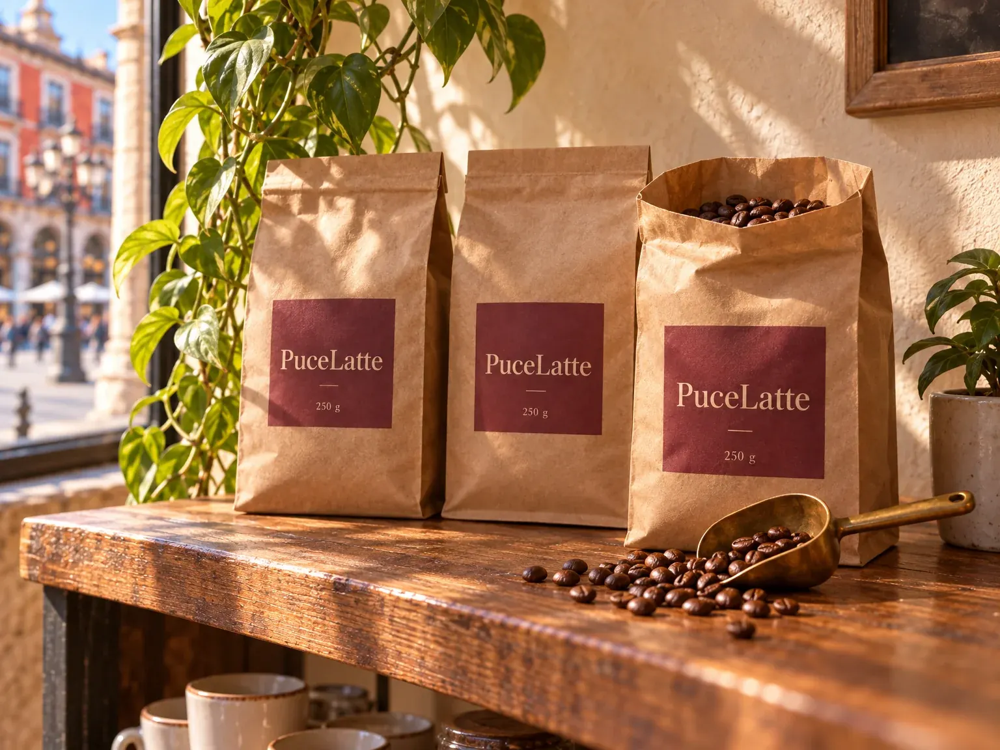
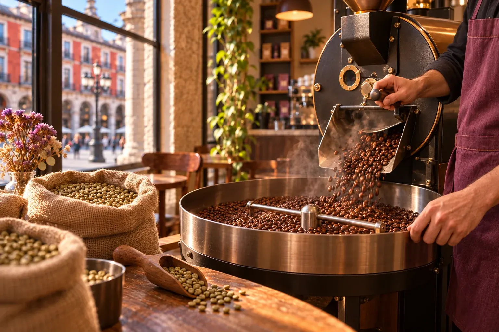
Parte 2
Colores y letras para toda la web
Parte 2 · Theme Builder
El Theme Builder: las plantillas de tu web
Una plantilla se diseña una vez y sale en muchas páginas. Su condición dice dónde sale.
Plantilla
Tipo
Condición
1
Cabecera
Header
Entire site
2
Pie
Footer
Entire site
—
Las páginas
No son plantillas. Cada página se hace con Elementor
3
Noticia
Single Post
Entradas
4
Noticias
Archive
Entradas archive, Categorías, Etiquetas
5
Error 404
Error 404
404 Page
Todas las plantillas se hacen igual. Abre Elementor › Theme Builder. Pulsa el + de la tarjeta del tipo. Si ya tienes alguna plantilla, pulsa antes Add New, arriba a la derecha. Diseña la plantilla. Pulsa Publicar, después Add condition y al final Save & Close.
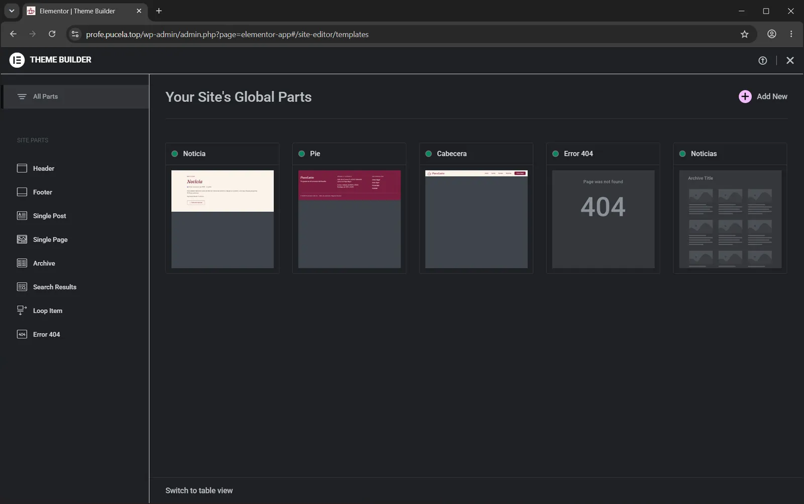
Theme Builder de Elementor Pro en PuceLatte. Captura propia, noviembre de 2026.
Theme Builder 1 de 5
La cabecera, paso a paso
Theme Builder 2 de 5
El pie, paso a paso
Las páginas
El Inicio, paso a paso
Las páginas
Carta, Cursos y Cómo llegar, paso a paso
Theme Builder 3 de 5
Cada noticia, paso a paso
Theme Builder 4 de 5
La página de Noticias, paso a paso
Theme Builder 5 de 5
La página de error 404, paso a paso
Parte 2
La versión móvil
Revisa cada página en el móvil y arregla lo que se ve mal.
—La página no se mueve de lado. Nada se sale por la derecha
—Las columnas salen una debajo de otra
—La cabecera y el pie se ven como en sus guías (51 y 52)
Lo más frecuente es un widget con un ancho personalizado, como el Price Table. En el móvil se queda estrecho. Así cambias el ancho solo en el móvil.
1.Pulsa el icono del móvil, en la barra de arriba del editor.
2.Elige el widget y abre la pestaña Avanzado.
3.En Ancho personalizado, cambia la unidad px por %. Escribe 100.
4.Pulsa Publicar. En el ordenador, el widget sigue igual.
Pruébalo · 10 min
Abre cada página de tu web en DevTools a 375 px. Arregla los anchos con estos pasos. Lo demás, enséñaselo al profesor.
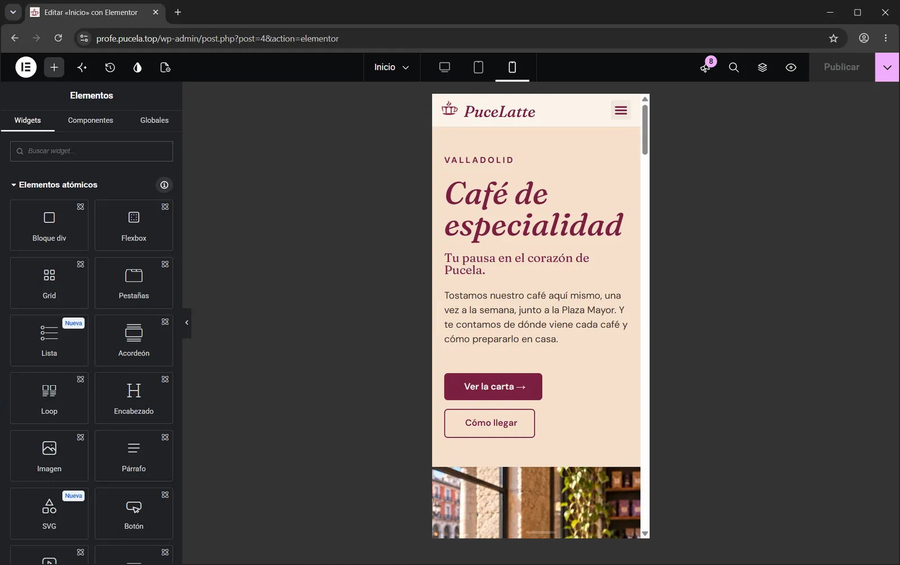
Vista Móvil en Elementor. Captura propia, noviembre de 2026.
Parte 2
CSS adicional
Si Elementor no tiene la opción que buscas, añades una regla de CSS, como en la UT2.
La regla va en Apariencia › Personalizar › CSS adicional. Vale para toda la web.
Para saber la clase de un elemento, pulsa en él con el botón derecho y elige Inspeccionar.
Los botones de Elementor ya tienen estilos que ganan a una regla normal. Por eso esta regla lleva !important. Así cambia todos los botones, también el del formulario.
Puedes pedir a la IA una regla concreta: «botones redondeados que cambien de color al pasar el ratón». Antes de pegarla, pruébala en DevTools y entiende qué hace cada línea.
Cambia #D9C3E6 y #3B2A26 por dos colores de tu paleta. Comprueba el contraste con DevTools: tiene que ser de 4,5 a 1 como mínimo.
Ver la carta →Al pasar el ratón
Comprueba lo aprendido
¿Dónde se elige qué página se ve al entrar en la web?
Selecciona una opción.
Parte 2 · La ley
Aviso legal
La web de un negocio dice quién es el titular del negocio. Lo pide la LSSI (art. 10).
✓Titular: nombre o razón social
✓NIF
✓Dirección y correo
✓Si es sociedad, sus datos del Registro Mercantil
En esta práctica, los datos legales son inventados, aunque el negocio sea real. El titular es el nombre del negocio con S.L. detrás. El NIF es B00000000.
Pide a la IA que adapte el aviso legal de PuceLatte con los datos de tu negocio. Comprueba que está cada dato. Pega el texto en la página Aviso legal con el editor de WordPress.
Escribe igual la página Privacidad. El formulario y el banner de cookies enlazan a ella.
El aviso legal de PuceLatte
Esta web es de PuceLatte Café, S.L., con NIF B00000000 y dirección en Calle de la Crema, 12, 47002 Valladolid. Registro Mercantil de Valladolid: tomo 0000, folio 000, hoja VA-00000. Correo: hola@pucelatte.example.
Datos ficticios: web de prácticas.
En un negocio real, un profesional revisa el aviso legal.
Parte 2 · La ley
Privacidad y el formulario
Parte 2 · La ley
Cookies y el banner
Una cookie es un archivo pequeño que una web guarda en el navegador. Las cookies técnicas hacen funcionar la web. Las demás, como las del mapa de Google, necesitan permiso antes de ponerse. Denegar tiene que verse igual que Aceptar (AEPD). Prueba el banner de PuceLatte.
Parte 2 · La ley
Configura Complianz, paso a paso
Parte 2 · Con tu cliente
La revisión del cliente
Tu cliente comprueba que los datos de la web son verdad. Enseña la web a tu cliente en el ordenador y en su móvil, y hazle estas preguntas.
1.¿Están bien el nombre, la dirección, el teléfono y el horario?
2.¿Están bien los servicios y los precios?
3.¿Hay alguna frase que tú no dirías así? ¿Cuál?
4.En tus textos hay datos que faltan. Llevan la palabra [PREGUNTAR]. Pregúntale esos datos. Pregúntale también por los datos que pusiste tú sin preguntar, como una fecha o un horario.
5.¿Qué falta en la web? Pide a tu cliente que te diga al menos una cosa.
La hoja de la revisión
Cambio pedido
¿Lo haces?
Por qué
Los precios de los desayunos
Sí
Faltaban en la entrevista
El domingo se abre a las 9:00, no a las 8:00
Sí
El horario lo sabe el cliente
Música al entrar
No
Molesta y gasta datos en el móvil
Escribe la hoja en un documento. Entrégala con la web, en la tarea de Classroom.
Práctica · Parte 3
Usuarios, seguridad, foro y copias
Lo que tiene que tener
✓ Usuarios: tu cliente (Editor), un empleado (Autor), alguien en prácticas (Colaborador) y dos clientes del negocio (Suscriptor). Si el negocio de tu cliente no tiene empleados, inventa los nombres. Inventa también los nombres de los dos clientes
✓ Los comentarios configurados
✓ Un foro público, uno privado, la página Foro, la plantilla de los foros y la página de normas
✓ La lista de seguridad, con DISALLOW_FILE_EDIT y verificación en dos pasos
✓ Todo actualizado y las actualizaciones automáticas activadas, también en los plugins que instalas en esta parte
✓ Independent Analytics con visitas registradas
✓ Una copia con UpdraftPlus, descargada, restaurada y programada
✓ Salud del sitio sin errores críticos
✓ Los cambios de la revisión del cliente
✓ Puedes usar
FileZilla para editar wp-config.php
Los plugins que ya tienes y los cuatro de esta parte: Two Factor, bbPress, Independent Analytics y UpdraftPlus
La IA para redactar las normas del foro y entender un aviso
✗ No puedes usar
Otros plugins sin preguntar antes al profesor
El usuario «profesor» para tus pruebas
La IA para configurar. La configuración la haces tú en el panel
Parte 3
Usuarios y roles
Cada persona entra con su propio usuario. Su rol decide qué puede hacer.
Rol
Qué puede hacer
En PuceLatte
Administrador
Todo: aspecto, plugins, usuarios y ajustes
Marta, la dueña, y tú
Editor
Publica y edita el contenido de todos; modera comentarios
Óscar, el encargado
Autor
Publica y edita sus entradas; sube imágenes
Lucía, barista: los cursos
Colaborador
Escribe sus entradas y un Editor las publica
Rubén, en prácticas
Suscriptor
Entra y edita su perfil
Los socios del club
Cada usuario necesita un correo distinto. Con Gmail, tucorreo+elena@gmail.com llega a tu mismo buzón. Por cada usuario nuevo, WordPress manda dos correos. Uno va al usuario, con un enlace para poner su contraseña, y el otro va al administrador. Es normal.
En Usuarios › Añadir usuario, el rol se elige en la lista Perfil. En tu web, tu cliente es Editor y tú eres Administrador, porque tú mantienes la web. En PuceLatte, la dueña también es Administradora.
Pruébalo · 5 min
Crea el usuario de tu cliente. Antes de pulsar Añadir usuario, copia la contraseña del campo Contraseña y apúntala. Después entra con ese usuario en una ventana de incógnito. ¿Qué partes del panel no ve tu cliente?
Parte 3
Actualizaciones
Actualizar corrige fallos, sobre todo fallos de seguridad.
—Núcleo. WordPress se actualiza solo con cada versión nueva, también con las mayores (7.1 → 7.2). Viene así y no hay que cambiarlo
—Plugins. En Plugins, pulsa «Activar las actualizaciones automáticas» en cada plugin
—Temas. En Apariencia › Temas, pulsa cada tema y después «Activar las actualizaciones automáticas»
—Antes de actualizar algo a mano, haz una copia de seguridad. Después actualiza y comprueba la web
—A mano. En Escritorio › Actualizaciones sale todo lo que está pendiente. Marca lo pendiente y pulsa el botón de actualizar
Pruébalo · 3 min
Al volver de vacaciones, ¿cuántas actualizaciones tienes pendientes?
91 %
de los fallos de seguridad de WordPress en 2025 estaban en plugins (Patchstack, 2026). Usa pocos plugins, de confianza y actualizados.
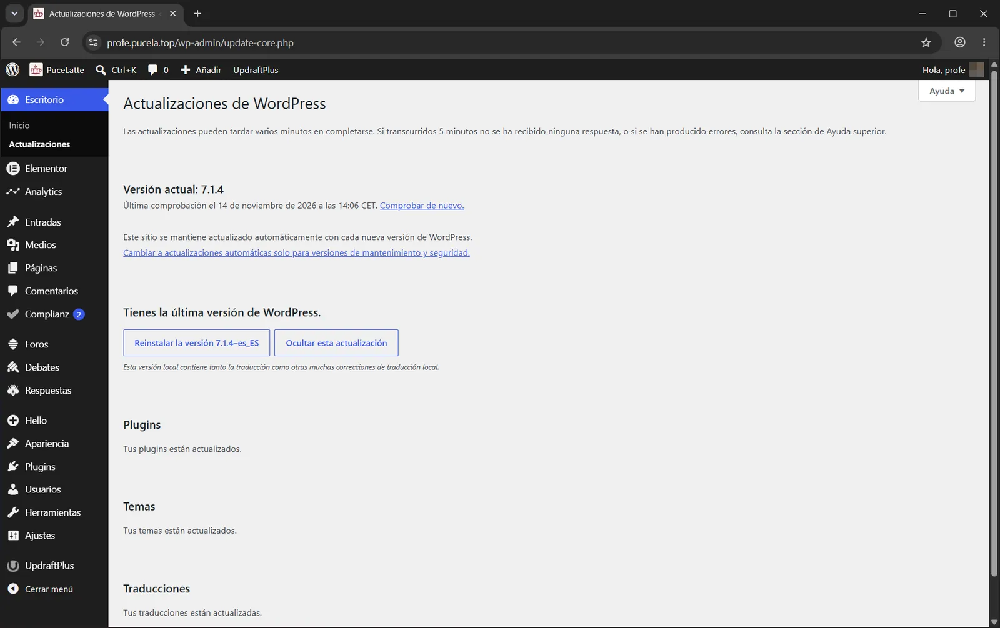
Actualizaciones en PuceLatte. Captura propia, noviembre de 2026.
Parte 3
La seguridad de tu WordPress
Qué
Dónde
Por qué
Usuario distinto de «admin» y contraseña fuerte
Al instalar; Usuarios › Perfil
Los robots prueban primero «admin» y las contraseñas comunes
Registro cerrado
Ajustes › Generales
Solo el administrador crea usuarios
El rol que necesita cada persona
Usuarios
Si alguien roba una contraseña, el daño es menor
Actualizaciones automáticas
Plugins; Apariencia › Temas
Los fallos de seguridad se corrigen en cuanto sale la actualización
Borrar los plugins desactivados, también Akismet
Plugins. En Apariencia › Temas, deja Hello Elementor y Twenty Twenty-Five
El código que no se usa también se puede atacar
Sin editor de archivos
wp-config.php, con FileZilla y VS Code
Quien entre en el panel no puede cambiar el código
Verificación en dos pasos
El plugin Two Factor, en tu usuario. Se activa en Usuarios › Perfil
Pide también un código de una aplicación del móvil
HTTPS
Ajustes › Generales. Las dos URL empiezan por https://
Cifra contraseñas y formularios
Parte 3
Comentarios: quién escribe y qué se publica
Los comentarios salen debajo de cada noticia gracias al widget Post Comments de tu plantilla Noticia. En Ajustes › Comentarios decides qué pasa antes de que un comentario se vea.
Lo elegido en PuceLatte
✓«Permitir que se envíen comentarios en las entradas nuevas». Viene marcada
✓«El comentario debe aprobarse manualmente», en «Para que un comentario aparezca»
✓«Número de enlaces admitidos en un comentario antes de que se someta a moderación», en «Moderación de comentarios»: deja el 2. Un comentario con 2 enlaces o más espera tu aprobación
Pulsa Guardar cambios, abajo del todo.
Pruébalo · 5 min
Comenta una noticia desde una ventana de incógnito. En el panel, ve a Comentarios y pulsa Pendiente, arriba de la lista. Pasa el ratón por la fila del comentario. Salen los enlaces Aprobar, Spam y Papelera. Pulsa Aprobar.
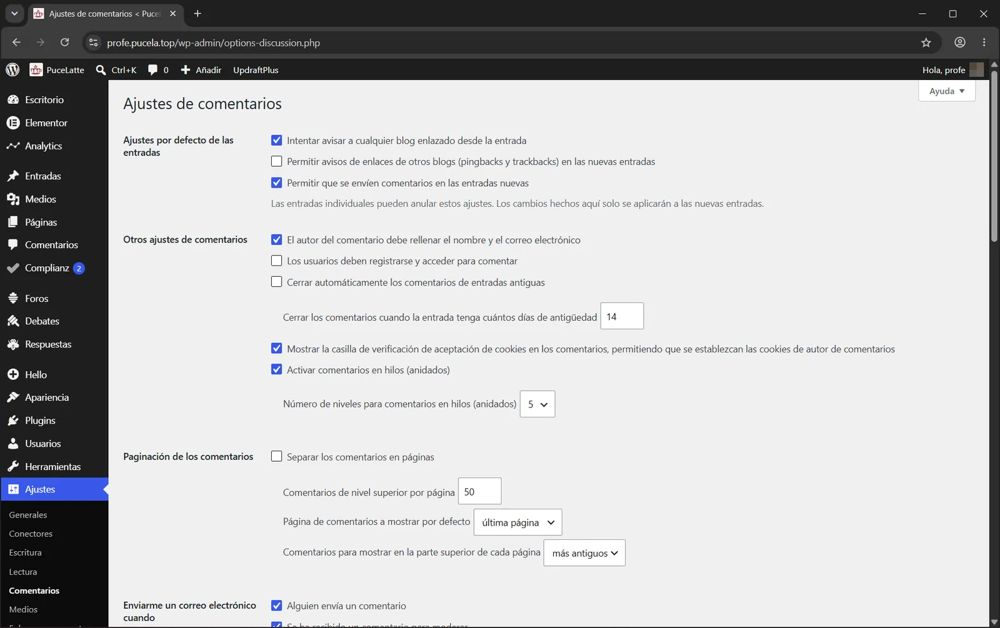
Ajustes de comentarios. Captura propia, noviembre de 2026.
En PuceLatte los aprueba Óscar, el editor. WordPress manda un aviso por correo al administrador y al autor de la noticia. El aviso lleva la IP de quien comenta. La IP no se puede quitar del aviso desde el panel.
Parte 3
El foro, paso a paso
Parte 3
Sindicación: el RSS
El RSS es la lista de lo último publicado, escrita en XML. Otros programas la leen sin entrar en la web.
/feed/ todas las entradas
/category/cursos/feed/ una categoría. Cambia «cursos» por una categoría tuya, tal como sale en la columna Slug de Entradas › Categorías
/comments/feed/ los comentarios
WordPress crea el RSS solo. En Ajustes › Lectura, el número de entradas del RSS está en «Número de elementos recientes que se muestran en los feeds».
Pruébalo · 2 min
Abre nombre.pucela.top/feed/ y busca tus tres noticias.
profe.pucela.top/feed/
<rss version="2.0">
<channel>
<title>PuceLatte</title>
<link>https://profe.pucela.top</link>
<description>Café de especialidad en Valladolid</description>
<language>es</language>
<item> … la noticia más nueva … </item>
<item>
<title>El café del mes: Etiopía</title>
<link>https://profe.pucela.top/el-cafe-del-mes-etiopia/</link>
<pubDate>Mon, 09 Nov 2026 08:00:00 +0000</pubDate>
</item>
</channel>
</rss>
Parte 3
Informes de acceso: quién visita la web
Los informes dicen cuántas visitas tiene la web, qué páginas se ven y desde dónde llegan los visitantes.
Cómo
Cookies
Estadísticas del hosting
No: salen de los registros del servidor
Independent Analytics
No: guarda los datos en tu servidor. Es la que usas en tu web
Google Analytics
Sí: necesita el permiso del visitante en el banner
—En Plugins › Añadir plugin, busca Independent Analytics. Instala y activa el que pone «Por Ben Sibley». Burst Statistics, el de al lado, es otro plugin
—Sale una pantalla que pide suscribirte. Pulsa Saltar. «Permitir y continuar» manda tu nombre, tu correo y tu lista de plugins a la empresa del plugin
—En el aviso «Por favor, borra tu caché…», pulsa He borrado la caché
Tus visitas no cuentan mientras estás conectado como administrador. Si ves todo a cero, como en la captura, es normal. Para hacer una visita que cuente, abre tu web en el móvil o en una ventana de incógnito.
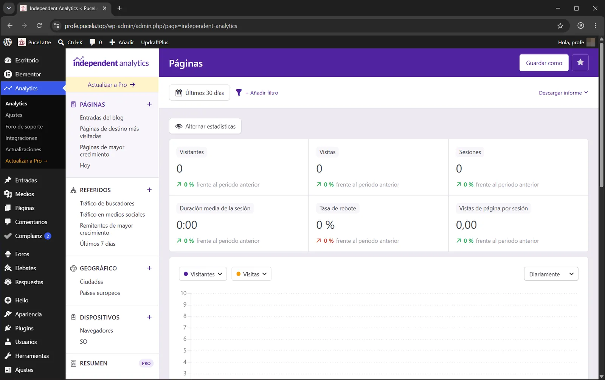
Independent Analytics en PuceLatte. Captura propia, noviembre de 2026.
Parte 3
Copias de seguridad
Una copia sirve si se puede restaurar. Lleva las dos partes de WordPress: los archivos y la base de datos.
Cada cuánto
Haz una copia cada semana si la web es pequeña, y cada día si cambia a diario. Haz también una copia antes de actualizar.
Dónde
Guarda al menos una copia fuera del servidor. En tu web, esa copia es la que bajas a tu equipo con UpdraftPlus. Las copias programadas se quedan en el servidor.
Tipos
Completa: copia todo. Incremental: copia lo que ha cambiado desde la última copia. Diferencial: copia lo que ha cambiado desde la última copia completa.
Tres formas
Las del hosting, automáticas
UpdraftPlus: programa las copias y restaura desde el panel. Es la que usas en tu web
A mano: bajar wp-content por SFTP y exportar la base de datos
Parte 3
Copia y restaura tu web con UpdraftPlus
Parte 3
Pruebas de funcionamiento
Probar es usar la web como la usarán los demás y apuntar lo que falla. Otra persona prueba tu web mejor que tú, porque tú ya sabes dónde pulsar.
La hoja de pruebas
Qué pruebo
Qué debería pasar
Qué pasa
Qué corregí
La hoja de pruebas está en la tarea de Classroom. Rellena una fila por cada prueba.
Enlaces. Pulsa cada enlace del menú y del pie. Cada enlace abre su página
Formulario. Envía el formulario de contacto. El aviso llega al correo
Banner. En una ventana de incógnito, pulsa Denegar. Pulsa F12 y abre Aplicación › Cookies. Solo hay cookies que empiezan por cmplz_. El mapa sale bloqueado
Móvil. Mira cada página en DevTools a 375 px y en un móvil de verdad. Nada se sale por la derecha
Roles. Entra con cada usuario en una ventana de incógnito. El Colaborador solo tiene el botón Enviar para revisión. El Editor no ve Plugins
Foro. Abre la página Foro en una ventana de incógnito, sin entrar con un usuario. Solo sale el foro público
Salud del sitio. En Herramientas › Salud del sitio no hay errores críticos
Copia. En UpdraftPlus, la copia sale en Copias de seguridad existentes y se descarga
Ejercicio interactivo
Empareja
Cada juego tiene seis parejas. El botón Otro ejercicio cambia de tema. Hay tres temas: los roles, dónde se hace cada cosa y los plugins.
Soporte: ¿qué haces?
Después de actualizar un plugin, la web dice «Ha habido un error crítico en esta web».
Selecciona una opción.
Entrega
Lista para publicar
Antes de entregar una web al cliente se repasa esta lista.
En tu práctica (va en la hoja de pruebas)
✓ Icono del sitio, si tu cliente tiene icono (diapositiva 49)
✓ Página 404 con el diseño de la web
✓ Fotos ligeras, de menos de 500 KB cada una. El peso sale en Medios, al pulsar la foto
✓ El aviso del formulario llega al correo
✓ Contraste suficiente. Compruébalo con el selector de color de DevTools, como en la unidad de CSS
✓ Un solo h1 en cada página. Para ver la etiqueta de un título, haz clic derecho en el título y pulsa Inspeccionar
✓ Se usa con el teclado. Pulsa Tab varias veces. Se ve en qué enlace estás y llegas a todos los enlaces
✓ Marcado «Pedir a los motores de búsqueda que no indexen este sitio» (Ajustes › Lectura)
En un negocio real, al publicar
— Desmarcar esa casilla de Ajustes › Lectura para que los buscadores encuentren la web
— Título y descripción de cada página
— El mapa del sitio: wp-sitemap.xml
— Darla de alta en Google Search Console
— El Perfil de Empresa de Google, con la dirección y el horario
Entrega
Prueba la web de un compañero
Un compañero prueba tu web con la hoja de pruebas. Tú pruebas la web de tu compañero.
1.Tu compañero prueba la parte pública de tu web en su ordenador y en su móvil.
2.Después, enseña a tu compañero lo que solo se ve con usuario. Entra en tu web en una ventana de incógnito con tu Colaborador, con tu Editor y con un Suscriptor. Con el Suscriptor se ve el foro privado. Enseña también la Salud del sitio y la copia de UpdraftPlus.
3.Tu compañero te da la hoja rellena. Corrige los fallos. Escribe lo que corregiste en la columna Qué corregí.
La web se queda publicada hasta que salgan las notas.
Lo que entregas en Classroom
✓La dirección de tu web
✓La hoja de pruebas que te hizo tu compañero, con lo que corregiste
✓La hoja de la revisión del cliente
✓La hoja de IA
Examen
Examen de teoría
No puedes usar apuntes ni IA. Muchas preguntas llevan una captura del panel.
Qué entra
Qué es un gestor de contenidos y sus tipos; cómo funciona y cómo se instala WordPress; SFTP y wp-config.php; el panel y Elementor; la ley y las cookies; usuarios y roles; actualizaciones y seguridad; comentarios y foro; RSS; informes; copias y pruebas.
Cómo prepararlo
El resumen, las dos chuletas con su Modo repaso, los quiz y los interactivos de la unidad.
Unidad 3
Resumen de la unidad
01
Un gestor de contenidos guarda el contenido en una base de datos y el aspecto en un tema. Se publica sin escribir código.
02
WordPress necesita servidor web, PHP y base de datos. Se instala subiendo sus archivos por SFTP y preparando wp-config.php.
03
Los textos se redactan con IA a partir de la entrevista y los aprueba el cliente. Las páginas se montan con Elementor.
04
La web de un negocio lleva aviso legal, privacidad y un banner de cookies que deja rechazar.
05
Cada persona entra con su usuario y con el rol que necesita. La web está actualizada, con pocos plugins y verificación en dos pasos.
06
Una copia sirve si se ha restaurado. Una web está terminada cuando otra persona la ha probado.
Chuleta de WordPress · 1 de 2
Instalar
Lo que necesitas para instalar WordPress a mano. Pulsa el título de un grupo para ir a su explicación. El botón Modo repaso tapa las explicaciones.